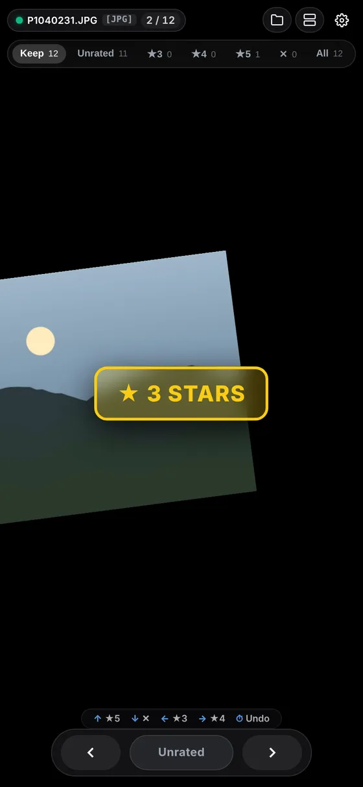
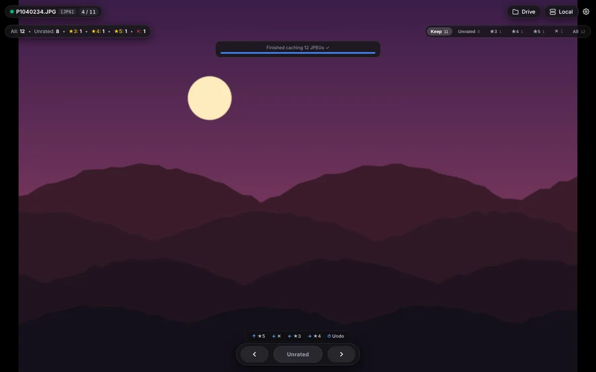

Cull a shoot before the coffee cools.
One swipe per photo on your phone, one key per photo on your laptop. DarkCull keeps the next shots decoded and waiting, so there's no lag between a decision and the next frame. Ratings go straight into darktable sidecar files.
Phone, tablet or laptopWorks offlineLocal folder or Google DriveNo account, no server
Open DarkCull →

On your phone
Swipe to decide. Hold to undo.
↑★★★★★keeper
←★★★maybe

→★★★★good
↓✕ Rejectreject
Long-press anywhere to undo.
Why it's quick
Nothing to wait for.
Every gesture can be remapped in Settings, and the hint bar along the bottom always shows what each direction does.
Next photo already decodedImages are decoded ahead of time, so switching takes under 5 ms.
Auto-advanceRate it and the next frame is already there. No extra tap.
Scrub the counterDrag the photo counter to fly through the roll with a live preview.
Focus checkDouble-tap or pinch for 100% zoom right where you touched.
Cached for the fieldDrive JPEGs are cached locally, so culling keeps working with no signal.
Burst badgesEXIF timestamps group bursts, so you can see 3/7 and pick the sharpest.

On your laptop
Hands stay on the keys.
AD previous / next1–5 rate and advanceX rejectSpace 1:1 loupeCtrlZ undoF fullscreen
Into darktable
Your RAW files are never touched.
Sync directly with a local folder (on your laptop or SD card) or Google Drive. Each rating creates or patches a sidecar file next to the RAW, so darktable reads your stars and rejects on import.
<rdf:Description rdf:about=""
xmp:Rating="5"
darktable:history_end="0"/>
P1040231.RW2.xmp